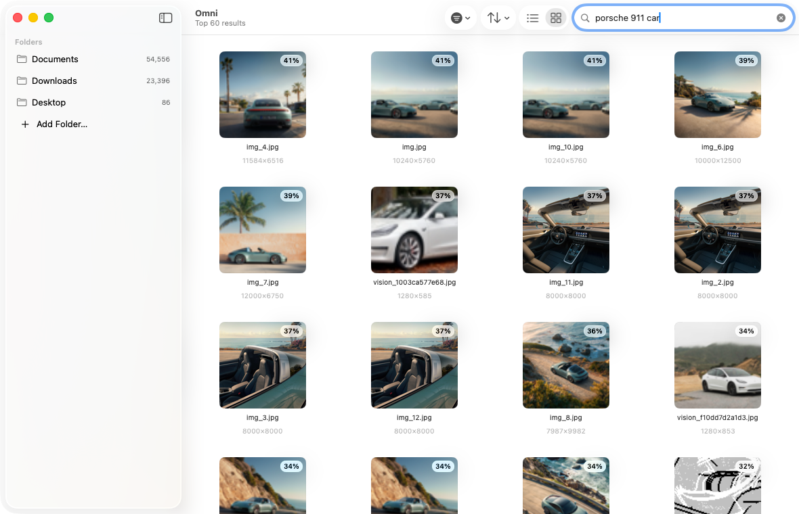
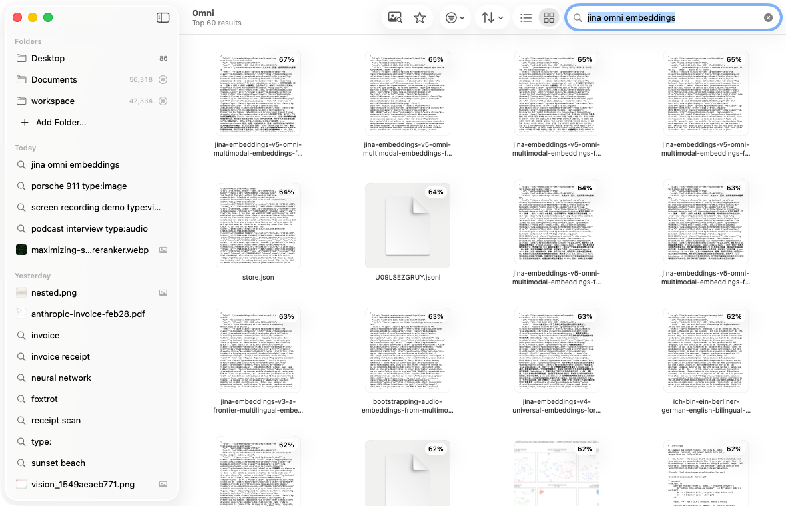
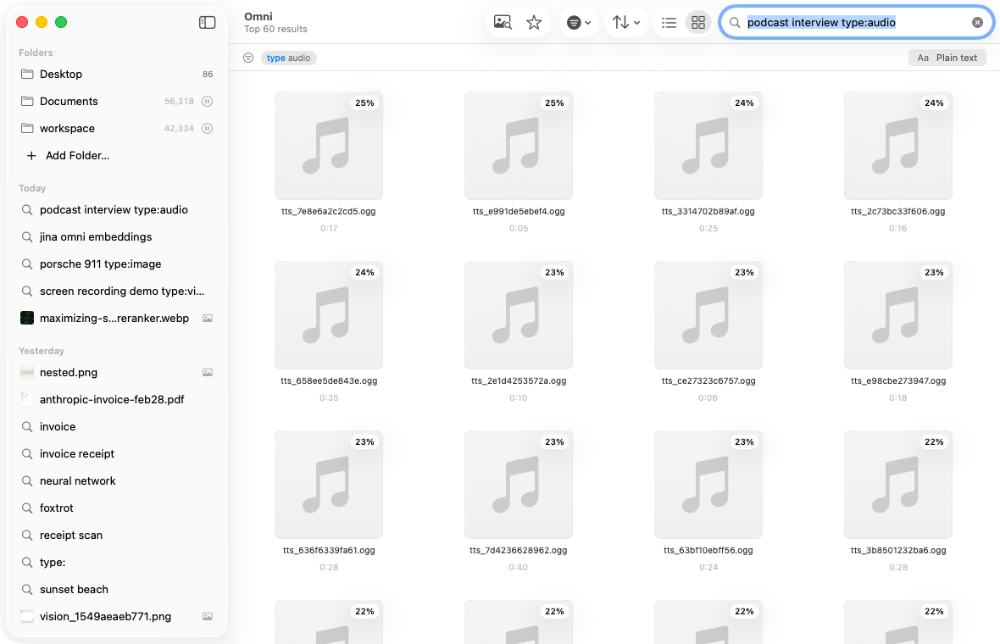
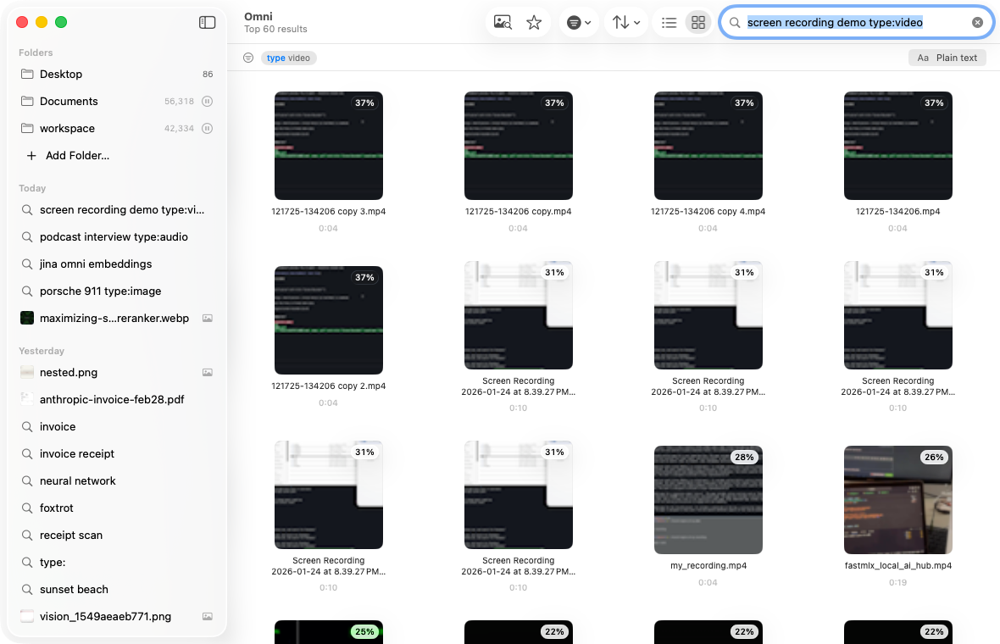
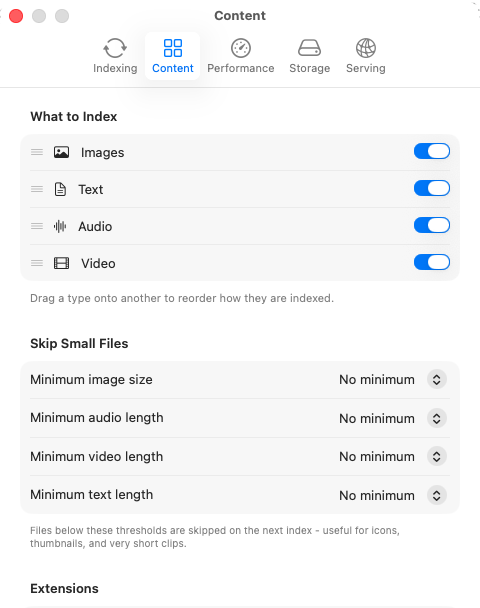
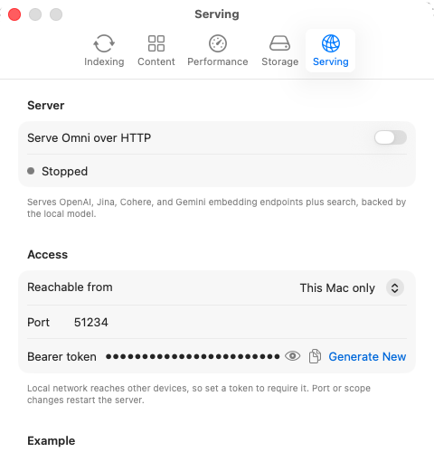

One space for every file
Text, code, PDFs, images, audio, and video are embedded into a single vector space. A text query matches them all - including scanned pages.
Text, code, PDFs, images, audio, and video in one vector space - searched in any language, entirely on-device.
Apple silicon · macOS 14+
Features
Text, code, PDFs, images, audio, and video are embedded into a single vector space. A text query matches them all - including scanned pages.
Languages share that same space, so a query in one finds files in another. Search in English, match notes in German, Chinese, or Japanese.
Indexing and search run on your Mac. Files never leave the device. No accounts, no telemetry, no network at query time.
List and Gallery views, real QuickLook thumbnails, drag and drop, and filters by kind, folder, and score.
Private by design
Omni runs a native MLX-Swift port of jina-embeddings-v5-omni in-process, on the Apple silicon GPU. The model downloads once; after that, Omni works offline.
A look inside






Serving
Omni exposes its search over your indexed files as a local endpoint - loopback-only and token-guarded. Agents like Hermes and OpenClaw query your files by meaning, on your machine, with no cloud round-trip.
Search endpoint
The same semantic search the app uses, over the index you already built - how agents actually reach your files.
Embeddings · add-on
Raw vectors too, via OpenAI-, Jina-, Cohere-, and Gemini-compatible APIs.
Apple silicon · macOS 14+ · the model downloads once, then works offline